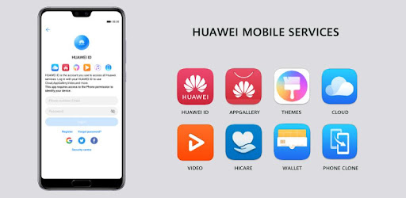

“NUEVAS TECNOLOGÍAS CON HUAWEI MOBILE SERVICES”
Los Huawei Mobile Services son la alternativa de Huawei a los Google Mobile Services, un paquete de herramientas listas para reaprovechar por los desarrolladores de modo similar a como lo hacen con los servicios de Google. De cara al usuario, estos servicios sustituyen a Google por la propia Huawei, centralizando todas las configuraciones, datos guardados de apps, o copias de seguridad en la cuenta de Huawei que te debes crear.
Gracias a estos servicios, Huawei puede tener sus móviles Android funcionando con normalidad, pero sin las aplicaciones de Google. De cara al usuario, lo único que vamos a notar es que no tenemos la tienda oficial de aplicaciones de Google ni las apps básicas de la empresa del buscador. En su lugar, tenemos la tienda de aplicaciones propia de Huawei y una mayor facilidad para instalar archivos pk desde otros repositorios.
Además, los desarrolladores también se benefician de varias APIs para facilitar el uso de servicios de Google, como la geolocalización constante, inicios de sesión, y muchos otros aspectos. Google mantiene el control de estos sistemas en las apps, y a cambio, los desarrolladores se ahorran tiempo y dinero al no tener que crearlos ellos desde cero.Huawei ya contaba con sus cuentas de usuario, sistema de pagos e incluso tienda de apps. Pero tras el veto de Google, ahora está teniendo que crear una solución global que pueda utilizar igualmente en cualquier país del mundo donde venda sus móviles.
PONENTE:
Ing.Alejandro Mota Guerrero
